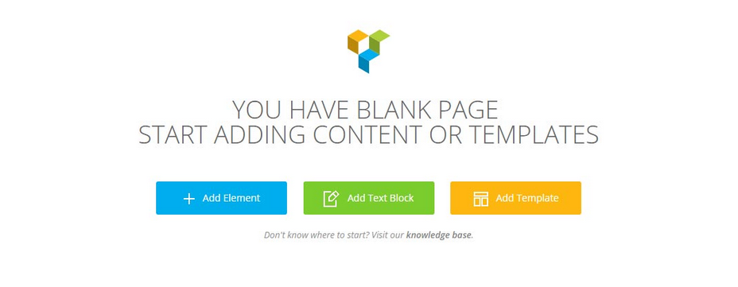
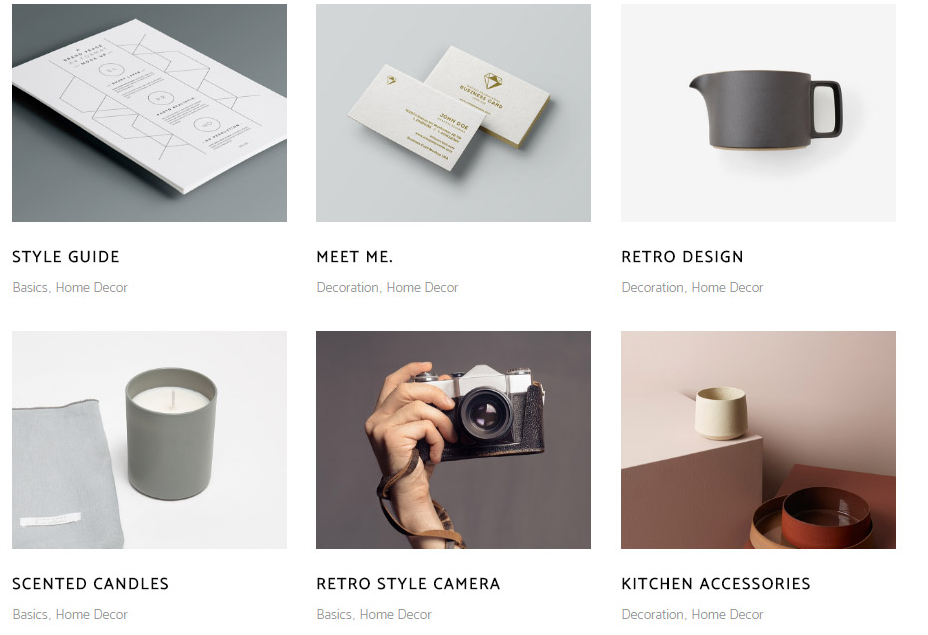
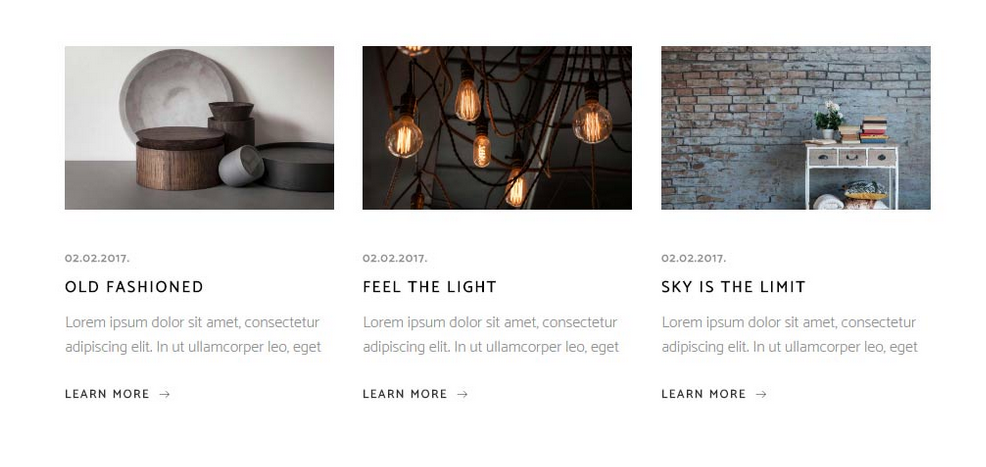
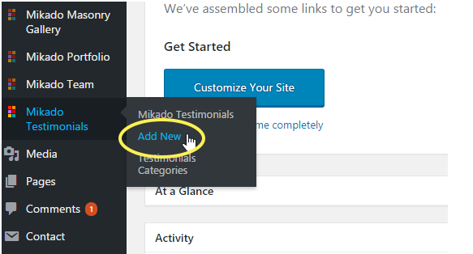
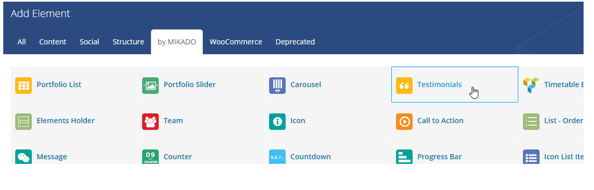
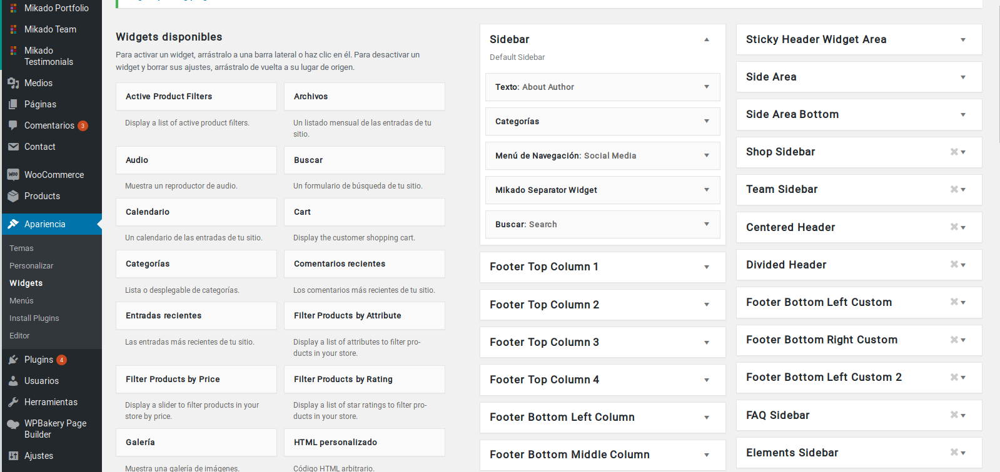
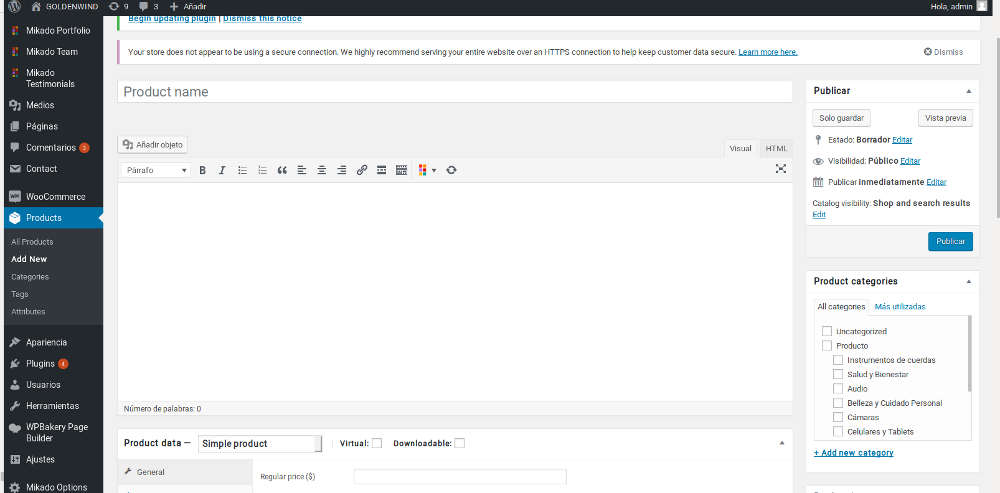
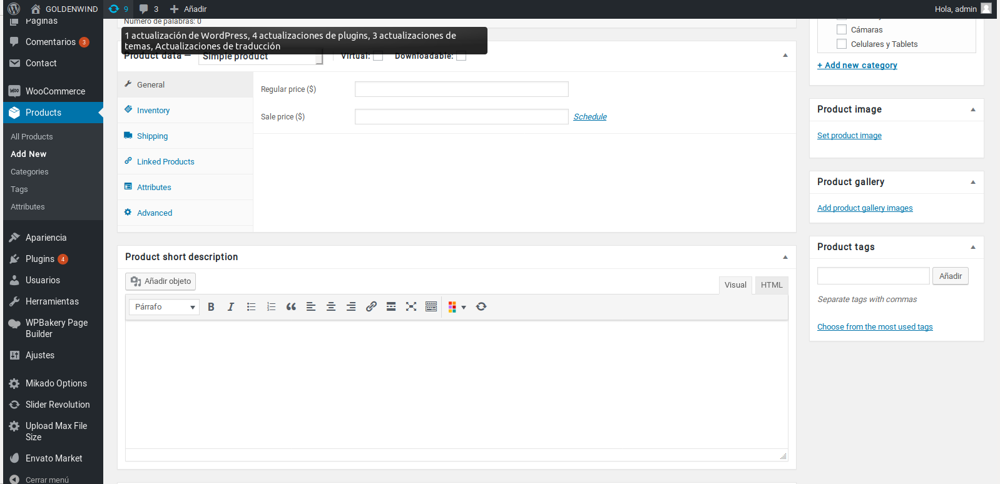
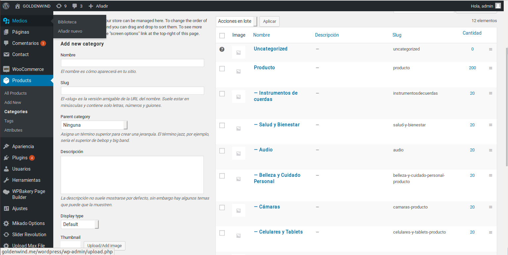

Códigos Cortos
Identificadores
En esta sección de la Guía del usuario, analizaremos de manera exhaustiva todos los códigos cortos personalizados incluidos en el tema y sus opciones representativas.

Elementos de fila
El elemento fila es un elemento contenedor en el que puede agregar otros elementos (códigos cortos) y ordenarlos en su página. Además de las opciones estándar de Visual Composer para las filas, también tiene las siguientes opciones personalizadas:
Tipo de fila Mikado: elija si desea que esta fila sea una fila normal o una fila "Parallax".
Altura de la sección de paralaje Mikado: ingrese una altura para la fila de paralaje.
Imagen de fondo de Mikado Parallax: cargue una imagen de fondo para la fila de paralaje.
Velocidad de paralaje Mikado: ingrese una velocidad (en milisegundos) para el efecto de paralaje.
Mikado Row Content Width: establece un ancho para el contenido de tu fila. Puede elegir entre "Ancho completo" y "En cuadrícula".
Mikado Anchor ID: ingrese una identificación de anclaje para esta fila. Las ID de anclaje se utilizan para crear enlaces de anclaje para la funcionalidad del sitio de una página. Puede encontrar más información sobre la creación de enlaces de anclaje en la sección Menús de esta Guía del usuario.
Alineación de contenido de Mikado: establezca una alineación para el contenido en esta fila.
Opciones de diseño
En la pestaña Opciones de diseño puede establecer márgenes, bordes, rellenos, así como colores de bordes, estilos de bordes, radio de borde, color de fondo y una imagen de fondo para su fila.
Lista de Portafolio

El código breve de la lista de carteras le permite presentar una lista de sus carteras en una página.
General
Plantilla de lista de cartera: elija una plantilla para su lista de cartera. La plantilla que elija definirá cómo se mostrará su lista de cartera.
Número de columnas: establezca el número de columnas en las que le gustaría mostrar su lista de cartera.
Espacio entre elementos de cartera: elija un espacio entre los elementos de cartera en la lista.
Número de carteras por página: elija la cantidad de carteras que le gustaría mostrar por página. Ingrese "-1" para mostrar todas las carteras en una sola página.
Proporciones de imagen: elija las proporciones de las imágenes en su lista de portafolio.
Habilitar proporciones de imagen fijas: configure esta opción en "Sí" si desea habilitar la configuración de proporciones de imagen predefinidas para la imagen destacada de cada uno de los elementos de su cartera. Si configura esta opción en "Sí", las proporciones de la imagen destacada corresponderán a la configuración que estableció en el campo "Dimensiones para mampostería - Proporción fija de imagen" en el elemento de su cartera. Si esta opción está configurada en "No", se utilizará la proporción original de las imágenes.
Lista de cartera de una categoría: si solo desea mostrar las carteras de una sola categoría, ingrese la categoría en este campo.
Mostrar solo proyectos con ID en la lista: si solo desea mostrar ciertos proyectos en su lista de portafolio, ingrese los ID de esos proyectos en este campo.
Lista de cartera de una etiqueta: si desea mostrar carteras con solo una etiqueta determinada adjunta, puede ingresar la etiqueta aquí.
Ordenar por: elija cómo desea ordenar los artículos de su cartera.
Orden: Elija entre orden ascendente y descendente.
Diseño de contenido
Estilo del artículo: elija un estilo (diseño y tipo de desplazamiento) para los artículos en su lista de cartera.
Sombra alrededor del elemento: establezca esta opción en "Sí" si desea mostrar una sombra alrededor del elemento.
Habilitar título: establezca esta opción en "Sí" para mostrar los títulos de la cartera en la lista.
Etiqueta de título: elija una etiqueta de encabezado para los títulos en su lista de cartera.
Transformación de texto de título: elija un estilo de tr
ansformación de texto para el título.
Habilitar categoría: configure esta opción en "Sí" para mostrar las categorías en su lista de cartera.
Habilitar extracto: establezca esta opción en "Sí" para mostrar el extracto en su lista de cartera.
Deslizador del Portafolio
El código abreviado del control deslizante de la cartera le permite mostrar los elementos de su cartera en una presentación de diapositivas interactiva por la que los espectadores pueden navegar.
General
Número de elementos de la cartera: establezca el número de elementos de la cartera que le gustaría mostrar.
Número de columnas: establezca un número de carteras que se mostrarán al mismo tiempo en el control deslizante.
Espacio entre elementos de cartera: establezca un espacio entre los elementos de la cartera en el control deslizante.
Proporciones de imagen: establezca proporciones para las imágenes destacadas de su cartera.
Lista de cartera de una categoría: si solo desea mostrar las carteras de una sola categoría, ingrese la categoría en este campo.
Mostrar solo proyectos con ID en la lista: si solo desea mostrar ciertos proyectos en su lista de portafolio, ingrese los ID de esos proyectos en este campo.
Lista de cartera de una etiqueta: si desea mostrar carteras con solo una etiqueta determinada adjunta, puede ingresar la etiqueta aquí.
Ordenar por: elija cómo desea ordenar los artículos de su cartera.
Orden: Elija entre orden ascendente y descendente.
Lista de blogs

Este shortcode te permite mostrar tus publicaciones de blog en una página.
General
Tipo: elija un tipo para su lista de blogs.
Número de publicaciones: elija una cantidad de publicaciones para mostrar.
Número de columnas: establezca el número de columnas en las que desea que se muestren sus publicaciones de blog.
Espacio entre columnas: elija un espacio predefinido entre columnas.
Ordenar por: elija cómo desea ordenar las publicaciones de su blog.
Orden - Elija entre orden ascendente y descendente.
Categoría: si desea mostrar solo las publicaciones de blog de una determinada categoría, ingrese la categoría slug en este campo.
Tamaño de imagen: elija un tamaño para sus imágenes.
Testimonios
Lo que se dice de tí
En esta sección de la Guía del usuario, analizaremos cómo crear y cómo agregarlos a las páginas de su sitio web.
Los testimonios son una excelente manera de mostrar a los clientes potenciales lo que otros dicen sobre su negocio.
Para crear un testimonio, navegue a Testimonios> Agregar Nuevo desde el panel de administración de WordPress e ingrese un título para su testimonio en el campo de texto cerca de la parte superior de la pantalla.

Llena los siguientes campos para completar tu testimonio nuevo:
- Titulo:Ingresa el titulo para tu testimonio.
- Texto:Ingresa el mensaje del testimonio.
- Autor:Ingresa el nombre del autor del testimonio.
- Cargo:Ingresa el cargo de la persona.
Ahora puedes asignar el testimonio a una categoría. EN la parte derecha de la pantalla verás una sección llamada "Categorías de Testimonio". Aquí tu puedes seleccionar que categoria deseas añadir al testimonio. Si tu quieres añadir una nueva categoria da clic a "Añadir nueva categoria de testimonio" y un campo de texto aparecera, en este tu ingresarñas en nombre para tu nueva categoría y luego da clic en "Añadir".
Después de que hayas seleccionado las categorías a añadir, da clic en el botón de "Publicar". Finalmente para ver el listado de testimonios, ve hacia la pagina del backend y da clic en "Añadir Elementos" y del menu de elementos selecciona "Testimonios".

Ahora tu puedes editar tus testimonios mostrados en la pagina, llenando los siguientes campos:
General
- Tipo:Elige un tipo de testimonio a usar.
- Estilo:Elige un estilo para el testimonio.
- Número:Elige el numero de testimonios que se mostrarán en la página.
- Categoría: Si te gustaría mostrar una categoría especifica en el testimonio, entra a configurar esto en Testimonios> Categorías de Testimonios de tu página de WordPress.
- Color de caja de contenido: Selecciona un color para la caja usando el tipo "Boxed" de testimonios.
Widgets
Funcionalidades extra
En esta sección de la Guía del usuario, discutiremos los widgets disponibles y las áreas de widgets en el tema.
Los widgets son fáciles de administrar y pueden ser increíblemente útiles para tener en su sitio. Para la plataforma, hemos desarrollado widgets personalizados y áreas de widgets para brindarle aún más funcionalidad. También tiene la opción de crear sus propias barras laterales personalizadas (áreas de widgets personalizados).

Lista de blogs de Mikado: use este widget para mostrar una lista de sus publicaciones de blog en un área de widgets (por ejemplo, en una barra lateral).
Mikado Button Widget: use este widget para agregar fácilmente un botón a un área de widgets.
Mikado Image Slider Widget: use este widget para agregar fácilmente un control deslizante de imagen a un área de widgets.
Mikado Image Widget: use este widget para agregar fácilmente imágenes a un área de widgets.
Inicio de sesión en Mikado: use este widget para agregar un botón de inicio de sesión en un área de widgets que los usuarios pueden usar para crear e iniciar sesión en sus cuentas de usuario personales.
Mikado Search Opener: use este widget para colocar el ícono de búsqueda en el área del widget que desee.
Mikado Separator Widget: use este widget para agregar fácilmente un separador a un área de widgets.
Mikado Side Area Opener: use este widget para colocar el icono que abre el área lateral en el área del widget que desee.
Mikado Social Icon Widget: use este widget para agregar fácilmente iconos sociales a un área de widgets.
Mikado Twitter Widget: para habilitar Mikado Twitter Widget, primero debes ir a Mikado Opciones> Social> Twitter, y hacer clic en el botón "Conectar con Twitter". Esto abrirá su navegador y le pedirá permiso a su cuenta de Twitter.
Una vez que haya habilitado el permiso, puede configurar las opciones para el widget, como un Título para el widget, la ID de usuario del usuario cuyos tweets desea que se muestren (http://es.mytwitterid.com/), la cantidad de tweets para mostrar, si se muestra la hora en que se twiteó el tweet, y también puede establecer un tiempo de caché de tweet. Si deja el tiempo de caché de tweet vacío, entonces sus tweets no se almacenarán en caché y cada vez que la página se vuelva a cargar, se solicitarán a Twitter. El tiempo de caché del tweet se define en segundos (solo se debe ingresar un número sin una unidad de tiempo, es decir, si ingresa 600, el tiempo de caché se configurará en 600 s). Si tiene algún problema con el feed de Twitter, puede ir a Opciones de Mikado> Social> Twitter y hacer clic en "Volver a conectarse a Twitter".
Mikado Instagram Widget: puedes usar este widget para mostrar tu feed de Instagram. primero debe ir a Opciones de Mikado> Social> Instagram y hacer clic en el botón "Conectar con Instagram". Esto abrirá su navegador y le pedirá permiso a su feed de Instagram.
Una vez que haya habilitado el permiso, recibirá las opciones para configurar un título para el widget, definir una etiqueta si desea mostrar imágenes con solo un determinado hashtag en su descripción (título), establecer el número de imágenes que desea mostrar, definir el número de columnas, establecer uno de los tres tamaños de imagen predefinidos y establecer un tiempo de caché de imágenes. Si deja el tiempo de caché de imágenes vacío, sus imágenes no se almacenarán en caché y cada vez que se vuelva a cargar la página se solicitarán a Instagram. El tiempo de caché de la imagen se define en segundos (solo se debe ingresar un número sin una unidad de tiempo, es decir, si ingresa 600 el tiempo de caché se configurará en 600 s). Si tiene algún problema con el feed de Instagram, puede ir a Opciones de Mikado> Social> Instagram, y hacer clic en "Volver a conectar a Instagram".
Mikado WooCommerce Dropdown Cart: puede usar este widget para mostrar el ícono de un carrito en un área de widgets deseada que, al pasar el cursor sobre, mostrará un menú desplegable con una lista de los artículos en su carrito.
WooCommerce
Creación de productos
Para crear un nuevo producto, porfavor ingrese a la opción "Productos" en su menú lateral izquierdo y seleccione "Agregar Producto". Aquí tu puedes configurar todos las opciones para WooCommerce para cada producto, como también para algunas opciones:
- Dimensión para la el shortcode de la lista de productos: elige una capa para las imágenes destacadas cuando el producto es mostrado en la lista de productos.
- Mostrar área de título: elige entre si mostrar el título del producto o no.
- Activar nueva marca de producto: Si tu quieres marcar este producto como "Nuevo" activa la opción eligiendo "si".
En el primer recuadro donde diga "Product Name" usted podrá agregar el nombre del producto, seguiamente vendrá un cuadro de texto, en este cuadro usted debe de ingresar una descripción detallada del producto (ojo no confundir con descripción corta), en esta tiene que ser muy especifico con los detalles de su producto, después tiene que ingresar a la sección de "Product Data" en la cual ingresara los precios del producto, pondrá un precio regular y un precio de venta, el precio de venta siempre tiene que ser menor al regular y será el precio al que venda su producto, puede llenar más datos de esta sección como lo son el inventariado, productos unidos ,a tributos y ajustes avanzados, pero para efectos de vender el producto no son necesarios.
Después tiene que ir al área de "Product Short Description" en el cual usted debe ingresar una descripción corta para que el cliente pueda leerla rapidamente sin necesidad de perder mucho tiempo, continuando uno debe de ir a la sección de "Product Image" en donde podrá ingresar la imágen del producto en cuestión que aparecerá en su tienda como preview, y en "Product Gallery" ingresará más imágenes para su producto para cuando el cliente ingrese al producto en el que está interesado, posteriomente vaya a "Categories" y seleccione aquellas categorías que apliquen para su producto, finalmente usted puede subir su producto dando clic al boton de "Publicar".


Creación de categorías para productos
SI usted desea clasificar sus productos mediante categorías, usted debe ingresar al menú de la izquierda y en la sección de "Productos" seleccione la subiopción "Categorías", en la nueva pestaña que verá podra crear nuevas categorías y ver las existentes, en la sección de "Añadir Nueva Categoría" usted podrá llenar los campos de texto de la siguiente forma, par el campo "Nombre" usted ingresará el nombre de la nueva categoría que ddesea crear, para el campo "Slug" ingresará un código corto de identificación rápida de la categoría, en "Categoría Padre" usted podrá indicar si tiene alguna Categoría padre, no es necesario que siempre haya alguno, y en descripción usted puede ingresar una descripción corta de la categoría. Finalmente usted da clic en "Añadir nueva categoría" y su categoría ya estará guardada.
